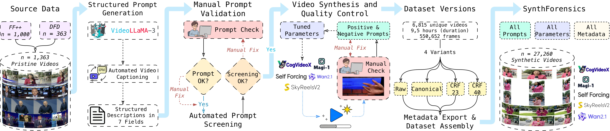

News
- 11 Feb 2026: SynthForensics dataset and code released.
- 4 Feb 2026: ArXiv preprint available — arXiv:2602.04939.
Abstract
The landscape of synthetic media has been irrevocably altered by text-to-video (T2V) models, whose outputs are rapidly approaching indistinguishability from reality. Critically, this technology is no longer confined to large-scale labs; the proliferation of efficient, open-source generators is democratizing the ability to create high-fidelity synthetic content on consumer-grade hardware. This makes existing face-centric and manipulation-based benchmarks obsolete. To address this urgent threat, we introduce SynthForensics, to the best of our knowledge the first human-centric benchmark for detecting purely synthetic video deepfakes. The benchmark comprises 6,815 unique videos from five architecturally distinct, state-of-the-art open-source T2V models. Its construction was underpinned by a meticulous two-stage, human-in-the-loop validation to ensure high semantic and visual quality. Each video is provided in four versions (raw, lossless, light, and heavy compression) to enable real-world robustness testing. Experiments demonstrate that state-of-the-art detectors are both fragile and exhibit limited generalization when evaluated on this new domain: we observe a mean performance drop of 29.19% AUC, with some methods performing worse than random chance, and top models losing over 30 points under heavy compression. The paper further investigates the efficacy of training on SynthForensics as a means to mitigate these observed performance gaps, achieving robust generalization to unseen generators (93.81% AUC), though at the cost of reduced backward compatibility with traditional manipulation-based deepfakes.
- 6,815 unique videos (~9.5 hours, 550K+ frames) from 5 state-of-the-art open-source T2V models
- Paired-source protocol: Each synthetic video paired with a real source video to control semantic variables
- Rigorous validation: Two-stage human-in-the-loop quality control for semantic fidelity and ethical compliance
- Four compression variants per video (Raw, Canonical, CRF23, CRF40) for robustness evaluation
- Complete reproducibility: Full metadata including prompts and generation parameters for every video
- Architectural diversity: Wan2.1, CogVideoX, SkyReels-V2, Self-Forcing, and MAGI-1 generators
Dataset Statistics
Generator Distribution
Text-to-Video Models
The benchmark uses five state-of-the-art open-source T2V generators with diverse architectures.
Wan2.1
14B parameters
High-fidelity video generation with advanced temporal consistency.
View on GitHub →CogVideoX
5B parameters
Efficient transformer-based architecture for realistic video synthesis.
View on GitHub →SkyReels-V2
14B parameters
Cinematic quality video generation optimized for narrative content.
View on GitHub →Self-Forcing
1.3B parameters
Compact architecture with novel attention mechanisms for efficiency.
View on GitHub →MAGI-1
24B parameters
Largest model with exceptional photorealistic quality and motion realism.
View on GitHub →Key Findings
Catastrophic Performance Gap
Mean 29.19% AUC drop when transitioning from manipulation-based to purely synthetic content.
Compression Fragility
Top models lose 30+ AUC points under heavy compression (CRF40).
Forward Generalization
Models trained on SynthForensics achieve 93.81% AUC on unseen generators.
Backward Incompatibility
Complete failure (56.11% AUC) on legacy manipulation-based benchmarks after training on synthetic data.
Benchmark Results
Comprehensive evaluation of 9 state-of-the-art deepfake detectors across multiple scenarios. (* Frame level detectors)
Zero-Shot Performance on SynthForensics (AUC %)
Fine-Tuning Results (AUC %)
Generalization to Unseen Generators (AUC %)
Construction Pipeline

The SynthForensics benchmark was constructed through a rigorous multi-stage pipeline designed to ensure high-quality, semantically consistent, and ethically sound synthetic video generation. The process combines automated systems with extensive human validation to produce a challenging and realistic benchmark.
Source Data and Paired Generation
SynthForensics employs a paired-source protocol using 1,363 pristine videos from FaceForensics++ (1,000 videos) and the DeepFake Detection dataset (363 videos). Each pristine video serves as an anchor for generating a corresponding synthetic counterpart via text-to-video models. This one-to-one mapping aims to control for high-level semantic variables: by pairing videos with matched scene descriptions, subjects, and actions, we minimize content-based confounds and encourage detectors to prioritize learning low-level generative artifacts over semantic correlations.
Structured Prompt Engineering
Modern T2V models require careful prompt engineering to achieve high-fidelity output. Following HunyuanVideo's multi-dimensional framework, we employed a Vision-Language Model to generate structured metadata for each source video across seven fields: short description, dense description, background, style, shot type, lighting, and atmosphere. This unified representation serves as a common source from which we dynamically construct model-specific prompts by selecting and ordering fields according to each generator's training distribution. While prompt structure varies across models, all derive from identical underlying metadata, ensuring semantic consistency.
Human-in-the-Loop Validation
Each of the 1,363 structured prompts underwent manual field-by-field validation to verify consistency with source video content and detect potentially sensitive or harmful content. Following manual review, all prompts were subjected to automated screening using a Large Language Model to detect subtle sensitive content that might have been missed. The LLM was instructed to flag references to violence, weapons, vulnerable individuals, political figures, geopolitical references, national symbols, and identifiable persons. Flagged prompts were manually rewritten to neutralize sensitive elements while preserving visual and narrative intent.
Video Synthesis with Generation Diversity
To reflect the heterogeneity of modern synthetic media, we introduce diversity across temporal, spatial, and format parameters. Following each model's recommended optimal settings, we generated videos with durations of 4–6 seconds at frame rates between 8–24 FPS, using resolutions from 480×832 up to 1280×720. A key distinguishing feature is the systematic aspect ratio diversity: we generated 2,732 landscape videos (16:9, 5:3) and 4,083 portrait videos (3:4, 9:16, 3:5), ensuring detectors are tested on fundamental video characteristics rather than overfitting to a single format.
Iterative Quality Control
Every synthesized video underwent manual inspection for anatomical inconsistencies, rendering errors, temporal artifacts, semantic coherence with prompts, and ethical compliance. Rejected videos triggered comprehensive refinement: prompt rewriting, negative prompt augmentation with artifact-specific keywords, and generation parameter adjustment. This iterative loop of generation, inspection, refinement, and regeneration repeated until a high-fidelity, coherent, and ethically sound video was accepted. Only videos successfully passing this rigorous validation constitute the final 6,815 samples.
The Team
Roberto Leotta*
iCTLab s.r.l.
Salvatore A. Sambataro*
University of Catania
Claudio V. Ragaglia
University of Catania
Mirko Casu
University of Catania
Yuri Petralia
iCTLab s.r.l.
Francesco Guarnera
University of Catania
Luca Guarnera
University of Catania
Sebastiano Battiato
University of Catania
* Equal contribution
Citation
@misc{leotta2026synthforensicsmultigeneratorbenchmarkdetecting,
title={SynthForensics: A Multi-Generator Benchmark for Detecting Synthetic Video Deepfakes},
author={Roberto Leotta and Salvatore Alfio Sambataro and Claudio Vittorio Ragaglia and Mirko Casu and Yuri Petralia and Francesco Guarnera and Luca Guarnera and Sebastiano Battiato},
year={2026},
eprint={2602.04939},
archivePrefix={arXiv},
primaryClass={cs.CR},
url={https://arxiv.org/abs/2602.04939},
}